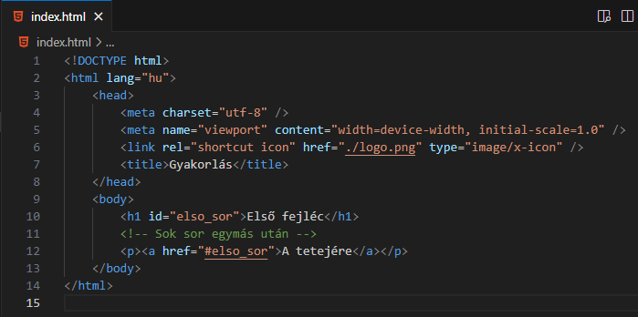

Alapvető dolgok:
-
Könyvjelző (bookmark): hosszú
weboldal esetén szükséges lehet a gyors pozícióváltás az
oldalon. Ekkor hasznos a könyvjelző.
-
Hozzunk létre egy könyvjelzőt:
<p
id="bookmark">Könyvjelző</p>
-
Állítsunk be egy saját oldalon lévő ide mutató
linket:
<a href="#bookmark">Link</a>
-
Vagy egy másik oldalon lévő ide mutató linket:
<a
href="masik.html#bookmark">Link</a>

Források:
w3schools/html
mdn/html